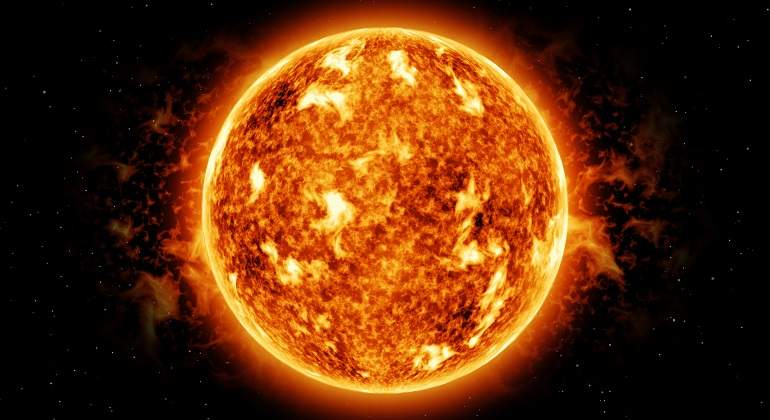

El Sol es una estrella enorme. Con un diámetro de 1,4 millones de kilómetros podría albergar a 109 planetas en su superficie. Si fuera hueco, más de un millón de Tierras podrían vivir en su interior, pero no lo es. Está relleno de gases calientes que representan más del 99,8 por ciento de la masa total del sistema solar. ¿A qué llamamos caliente? La temperatura alcanza los 5500 grados centígrados en la superficie y más de 15,5 millones de grados centígrados en el núcleo. En el núcleo del Sol, se producen reacciones de fusión en las que el hidrógeno se transforma en helio, que genera la energía. Unas pequeñas partículas de luz llamadas fotones transportan esta energía a través de la zona radiante hasta la capa superior del interior del Sol, la zona convectiva. Ahí, el movimiento de los gases hirviendo (como en una lámpara de lava) lleva la energía a la superficie. Este viaje dura más de un millón de años.
A pesar de que aún queda mucho por estudiar al respecto, la ciencia sabe que el campo magnético del sol aumenta y disminuye por períodos, es decir, aumenta hasta un máximo y luego se debilita de nuevo hasta alcanzar un mínimo en su actividad. Cuando el nivel de magnetismo se acerca a su máximo, se traduce en una gran cantidad de erupciones solares, eyecciones y manchas en su superficie. Tras este máximo, esa actividad decrece durante otro periodo hasta que vuelve a aumentar, y así sucesivamente. Hasta ahora, sabíamos que la actividad magnética del Sol se manifiesta oscilando entre sus mínimos y máximos a lo largo de un ciclo de 11 años. Sin embargo, incluso esos ciclos podrían estar cambiando sus patrones o superponiéndose y la comunidad científica no encuentra consenso al respecto. Hasta ahora, se sabía que el Sol alterna entre períodos tormentosos y más calmados cada 11 años aproximadamente. Estos ciclos están relacionados con su actividad magnética y desde la Tierra los estudiamos a través de las manchas y las erupciones solares.